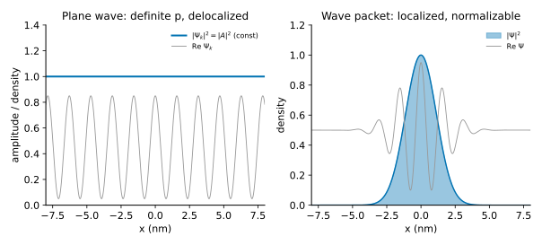
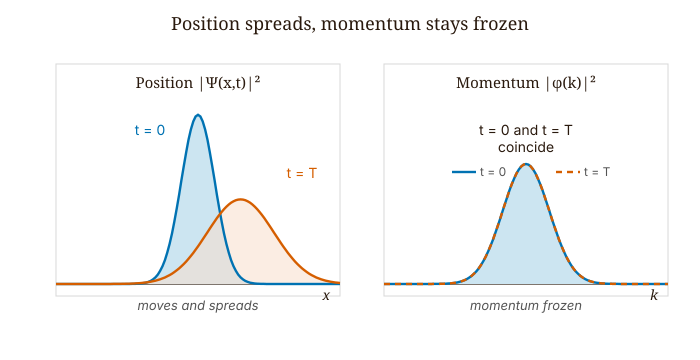
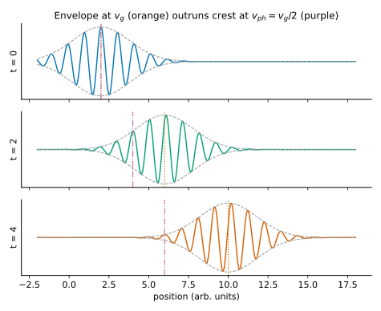
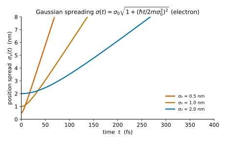

Quantum Mechanics · Volume 1
Chapter 4 — The Free Particle and Wave Packets
We begin with the simplest quantum mechanics problem there is: no potential anywhere, and a single particle moving freely through empty space. We already know how to set up the Schrödinger equation, and we have every reason to expect a clean answer.
In a region where \(V = 0\), the time-independent equation is
\[-\frac{\hbar^2}{2m}\frac{d^2\psi}{dx^2} = E\psi, \tag{4.1}\]
and the solutions come at once: \(\psi_k(x) = Ae^{ikx}\) with \(k = \sqrt{2mE}/\hbar\). Every positive real \(k\) is allowed. Every momentum \(p = \hbar k\) corresponds to a valid eigenstate. The time-dependent version is
\[\Psi_k(x,t) = Ae^{i(kx-\omega t)}, \qquad \omega = \frac{\hbar k^2}{2m}. \tag{4.2}\]
Now we try to normalize it. Computing \(|\Psi_k|^2\):
\[|\Psi_k|^2 = |A|^2. \tag{4.3}\]
The probability density is constant everywhere. It has the same value at \(x = 0\) and at \(x = 10^{26}\) meters. Integrating over all space gives \(\int_{-\infty}^\infty |A|^2\,dx = \infty\). The plane wave cannot be normalized on the whole real line for any nonzero \(A\). A free particle with perfectly sharp momentum \(p = \hbar k\) is literally everywhere at once — spread uniformly across all of space, with no preference for any location.
We should not read this as a mathematical glitch to be patched over. It is a direct consequence of the uncertainty principle. If the momentum is perfectly sharp, then \(\sigma_p = 0\), and the Kennard inequality \(\sigma_x\sigma_p \geq \hbar/2\) forces \(\sigma_x = \infty\). Non-normalizability is simply infinite position uncertainty seen from another angle.
So what do we do with a free particle? We build something physically realizable: a wave packet, formed by superposing plane waves with nearby momenta so that they add constructively in one region and cancel everywhere else. The result is a localized, normalizable object that moves and spreads in a way that, in the appropriate limit, makes direct contact with classical mechanics.

4.1 Building the Wave Packet
The most general solution of the free-particle Schrödinger equation is a superposition of all plane waves:
\[\Psi(x,t) = \frac{1}{\sqrt{2\pi}}\int_{-\infty}^{\infty}\phi(k)\,e^{i(kx-\omega(k)t)}\,dk, \qquad \omega(k) = \frac{\hbar k^2}{2m}. \tag{4.4}\]
The function \(\phi(k)\) is the momentum-space wave function, equivalently the Fourier amplitude. It records how much of each plane wave enters the superposition. At \(t = 0\), this is the Fourier transform pair:
\[\Psi(x,0) = \frac{1}{\sqrt{2\pi}}\int_{-\infty}^{\infty}\phi(k)\,e^{ikx}\,dk, \qquad \phi(k) = \frac{1}{\sqrt{2\pi}}\int_{-\infty}^{\infty}\Psi(x,0)\,e^{-ikx}\,dx. \tag{4.5}\]
Given any initial wave function, we compute \(\phi(k)\) by Fourier transform, attach the phase factor \(e^{-i\omega(k)t}\) to each component, and transform back. In this form, free-particle time evolution is both exact and complete.
Why is the packet normalizable when none of its ingredients are? If \(\phi(k)\) is concentrated near \(k_0\) with spread \(\Delta k\), the Fourier theorem guarantees that \(\Psi(x,0)\) is localized with spatial spread \(\Delta x \sim 1/\Delta k\). A localized function is normalizable. The plane waves cancel one another everywhere except near the center of the packet, so destructive interference does the work that no single wave could do on its own.
Now the physical meaning of \(\phi(k)\). By the Born rule applied in momentum space, \(|\phi(k)|^2\,dk\) is the probability of measuring momentum between \(\hbar k\) and \(\hbar(k+dk)\). Crucially, \(|\phi(k)|^2\) is time-independent: the momentum distribution never changes during free propagation. The phase of \(\phi(k)\) evolves as \(e^{-i\omega(k)t}\), but its modulus stays fixed. Whatever momentum distribution we start with, we keep forever. The packet spreads in position, but it does not spread in momentum.

4.2 Phase Velocity and Group Velocity
A single plane wave \(e^{i(kx-\omega t)}\) has a crest — a surface of constant phase — wherever \(kx - \omega t = \text{const}\). That crest moves at
\[v_{ph} = \frac{\omega}{k}. \tag{4.6}\]
For a free non-relativistic particle, \(\omega = \hbar k^2/2m\), so
\[v_{ph} = \frac{\hbar k}{2m} = \frac{p}{2m}. \tag{4.7}\]
The classical velocity is \(v_{cl} = p/m\). The phase velocity is exactly half the classical velocity, so the wave crests travel at half the speed we would classically assign to the particle. This tells us that the phase velocity is the wrong quantity to track.
The particle is not a single crest. The particle is the envelope of the packet — the blob of probability. To find how that envelope moves, we consider a packet sharply peaked at \(k_0\) and Taylor-expand the dispersion relation about \(k_0\):
\[\omega(k) = \omega_0 + \omega_0'(k-k_0) + \tfrac{1}{2}\omega_0''(k-k_0)^2 + \cdots \tag{4.8}\]
Substituting into the superposition integral, the factor \(e^{i(k_0 x - \omega_0 t)}\) pulls out as a carrier wave, and the remaining integral over the envelope becomes a function of the combination \(x - \omega_0' t\). The envelope is centered where this combination vanishes, namely at \(x = \omega_0' t\). The group velocity is
\[v_g = \frac{d\omega}{dk}\bigg|_{k_0}. \tag{4.9}\]
For the free particle, \(d\omega/dk = \hbar k/m\), so
\[v_g = \frac{\hbar k_0}{m} = \frac{p_0}{m}. \tag{4.10}\]
This is the classical velocity. The center of mass of the packet moves exactly as Newton’s first law predicts. In the sense of expectation values of position, the free-particle quantum wave packet behaves classically.
Now we compare the two speeds. For the free particle:
\[\frac{v_g}{v_{ph}} = \frac{\hbar k_0/m}{\hbar k_0/2m} = 2. \tag{4.11}\]
The group velocity is exactly twice the phase velocity. In the simulation, this means the envelope (the \(|\Psi|^2\) blob) moves at \(v_g\), while the individual wave crests inside it — the wiggles of Re \(\Psi\) — move at \(v_{ph} = v_g/2\). The envelope outruns its own internal oscillations. Individual crests keep appearing at the front of the packet and sliding backward through it, vanishing at the rear. You can watch this happen. It is not a numerical artifact; it is what the mathematics predicts, and experiment confirms it.
For particle motion, the phase velocity carries no direct physical meaning. It is not where the particle is, not how fast the particle moves, and not a speed any detector in the path would record. The group velocity is the physically meaningful speed. The phase velocity is an internal property of the wave structure.

4.3 Dispersion and the Spreading of the Gaussian Packet
The second derivative of the dispersion relation is
\[\frac{d^2\omega}{dk^2} = \frac{\hbar}{m}. \tag{4.12}\]
This is nonzero. Different Fourier components travel at slightly different group velocities — \(\text{higher-}k\) components move faster than \(\text{lower-}k\) ones. Over time, the components drift apart and the packet spreads.
For a Gaussian initial state — the natural choice, since it saturates the uncertainty bound and yields an exactly solvable integral — we can compute the spreading in closed form. Take
\[\Psi(x,0) = \left(\frac{1}{2\pi\sigma_0^2}\right)^{1/4}\exp\!\left(-\frac{x^2}{4\sigma_0^2}\right)e^{ik_0 x}, \tag{4.13}\]
a Gaussian whose position density has standard deviation \(\sigma_0\), centered at the origin, with mean wavenumber \(k_0\). Its Fourier transform is also Gaussian:
\[\phi(k) = \left(\frac{2\sigma_0^2}{\pi}\right)^{1/4}\exp\!\left(-\sigma_0^2(k-k_0)^2\right), \tag{4.14}\]
with momentum-space width \(\Delta k = 1/(2\sigma_0)\), giving \(\sigma_x(0)\,\sigma_p = \sigma_0 \cdot \hbar/(2\sigma_0) = \hbar/2\). The Gaussian starts exactly at the uncertainty bound — minimum uncertainty, as tight as quantum mechanics allows.
We attach \(e^{-i\omega(k)t}\) and perform the Gaussian integral by completing the square. The result is:
\[|\Psi(x,t)|^2 = \frac{1}{\sigma(t)\sqrt{2\pi}}\exp\!\left(-\frac{(x - v_g t)^2}{2\sigma(t)^2}\right), \tag{4.15}\]
where
\[\boxed{\sigma(t) = \sigma_0\sqrt{1 + \left(\frac{\hbar t}{2m\sigma_0^2}\right)^2}.} \tag{4.16}\]
The packet stays Gaussian for all time, but its width grows. A few features stand out immediately.
The center sits at \(x = v_g t = (\hbar k_0/m)t\) — classical motion, exactly. The momentum distribution \(|\phi(k)|^2\) does not appear in this expression at all, because it has not changed. Only the position distribution has spread.
At \(t = 0\), \(\sigma_x\sigma_p = \sigma_0 \cdot (\hbar/2\sigma_0) = \hbar/2\). For \(t > 0\), \(\sigma_x\) grows while \(\sigma_p\) stays fixed, so \(\sigma_x\sigma_p > \hbar/2\). As the packet spreads, it moves away from the minimum-uncertainty condition.
The spreading is caused by dispersion — \(d^2\omega/dk^2 \neq 0\) — not by the uncertainty principle. The uncertainty principle constrains the state at each instant; it says nothing about how the state evolves. A light pulse in vacuum has \(\omega = ck\), so \(d^2\omega/dk^2 = 0\), and it propagates without spreading at all. For the free particle there is no potential, no restoring force, and so the spreading cannot be avoided.
We define the doubling time — the time for \(\sigma_x\) to grow by a factor of \(\sqrt{2}\) — by setting \(\sigma(t)^2 = 2\sigma_0^2\):
\[t_{2x} = \frac{2m\sigma_0^2}{\hbar}. \tag{4.17}\]
This scales as \(\sigma_0^2\): a packet twice as wide takes four times as long to double. It is also independent of \(k_0\) — the mean momentum sets where the packet goes, not how fast it spreads. A fast packet and a slow packet of the same initial width spread at identical rates.

4.4 A Worked Calculation: How Long Before the Packet Doubles?
An electron is released from a quantum dot of diameter 10 nm, initially localized to \(\sigma_x(0) = 2\) nm. The confining potential is switched off. How long before the packet’s width doubles?
We apply the doubling-time formula directly:
\[t_{2x} = \frac{2m_e\,\sigma_x(0)^2}{\hbar} = \frac{2 \times (9.109\times10^{-31}\,\text{kg}) \times (2\times10^{-9}\,\text{m})^2}{1.055\times10^{-34}\,\text{J\,s}}. \tag{4.18}\]
Numerator: \(2 \times 9.109 \times 4 = 72.9\), so the numerator is \(72.9\times10^{-49}\) J·m²·s/m² \(= 7.29\times10^{-48}\) kg·m². Divide by \(1.055\times10^{-34}\):
\[t_{2x} \approx 6.9\times10^{-14}\,\text{s} \approx 69\,\text{fs.} \tag{4.19}\]
About 70 femtoseconds. An ultrafast pump-probe experiment can resolve timescales of 10–100 fs, so this spreading is genuinely observable. The electron does not drift gently outward over microseconds; it smears across the quantum dot in less time than it takes light to cross a human hair.
Now we check the limiting cases. If the dot is twice as narrow — \(\sigma_x(0) = 1\) nm — the doubling time drops to about 17 fs, four times shorter, because \(t_{2x} \propto \sigma_0^2\). If the dot is twice as wide — 4 nm — the doubling time grows to about 280 fs. The tighter the initial confinement, the broader the momentum distribution, and the faster the Fourier components disperse.
One more check: the mean momentum \(k_0\) does not appear in \(t_{2x}\) at all. An electron ejected from the dot at 1 eV and an electron ejected at 100 eV, both with the same initial width, double their spatial width at the same time. The packet’s translation speed is set by \(k_0\); the spreading rate is set entirely by \(\sigma_0\) and \(m\).
4.5 The Scales That Make Quantum Mechanics Invisible
We plug a 1 mg grain of sand into the same formula, localized to \(\sigma_x(0) = 1\,\mu\text{m}\):
\[t_{2x} = \frac{2\times10^{-6}\,\text{kg}\times(10^{-6}\,\text{m})^2}{10^{-34}\,\text{J\,s}} \approx 2\times10^{16}\,\text{s.} \tag{4.20}\]
This is roughly \(6\times10^{8}\) years — hundreds of millions of years, far longer than any laboratory experiment. The quantum spreading is present in principle, yet observationally indistinguishable from zero. Quantum mechanics has no special rule for large objects. It uses the same formula, and the formula simply returns an absurdly long timescale. The classical limit is not a philosophical choice; it is a number.
The dividing line is the ratio of the doubling time to whatever timescale is physically relevant. For an electron in an atom, \(t_{2x}\) is on the order of femtoseconds to attoseconds, and quantum effects dominate completely. For a marble, \(t_{2x}\) exceeds the age of the universe, and classical mechanics is exact for every practical purpose. The transition between the two regimes is smooth and computable, not mysterious.
| System | Mass | \(\sigma_0\) | Doubling time \(t_{2x}\) |
|---|---|---|---|
| Hydrogen 1s orbital | \(9.1 \times 10^{-31}\) kg | \(0.5\) Å | \(\sim 4 \times 10^{-17}\) s |
| Electron in a 1 nm quantum dot | \(9.1 \times 10^{-31}\) kg | \(1\) nm | \(\sim 2 \times 10^{-14}\) s |
| \(\text{C}_{60}\) molecule (900 K) | \(1.2 \times 10^{-24}\) kg | \(2.5\) pm | \(\sim 1 \times 10^{-13}\) s |
| Dust grain (1 µg) | \(10^{-9}\) kg | \(100\) nm | \(\sim 6{,}000\) years |
| Marble (1 g) | \(10^{-3}\) kg | \(1\) µm | \(\sim 6 \times 10^{11}\) years (≈ 40× the age of the universe) |
Table 4.1 — How long a free wave packet takes to grow by \(\sqrt{2}\) in width, \(t_{2x} = 2m\sigma_0^2/\hbar\), across twenty-seven orders of magnitude in mass. Microscopic packets spread within femtoseconds; everyday objects would take far longer than the age of the universe to delocalize at all — which is why we never see a marble go fuzzy.
4.6 What the Free Particle Teaches About the Wave Function
The free particle is the purest test case for the Fourier structure of quantum mechanics, and it teaches three lessons that carry forward into every more complicated problem.
First, energy eigenstates are not always normalizable. A particle confined by walls has localized, normalizable eigenstates; the free particle’s plane-wave eigenstates are neither localized nor normalizable. Physical states are always normalizable, but they are not always energy eigenstates. A physical free particle is a superposition — a wave packet — not a plane wave.
Second, time evolution is a phase rotation in Fourier space. Each \(\phi(k)\) component picks up the factor \(e^{-i\omega(k)t}\), while the modulus \(|\phi(k)|^2\) is untouched. This makes the momentum distribution a conserved quantity for the free particle: it cannot change when there is no force to change it. The classical counterpart is that momentum is conserved in the absence of a force. The quantum statement is the same, expressed as the constancy of \(|\phi(k)|^2\).
Third, the relationship between localization and momentum spread is exact and quantitative. To localize a particle within \(\Delta x\), we must superpose momenta over a range \(\Delta p \sim \hbar/\Delta x\). Tight localization requires broad momentum content. Broad momentum content means the Fourier components travel at a range of speeds and separate quickly. There is no way to localize a particle and also keep it from spreading, because the two requirements pull against each other directly. The uncertainty principle is not a limitation of measurement technology; it is a structural feature of waves.
The Fourier relationship \(\Delta x \cdot \Delta k \sim 1\) is a theorem of harmonic analysis, proved in the nineteenth century for entirely classical reasons. Quantum mechanics did not invent it. What quantum mechanics added was the identification \(p = \hbar k\) and the interpretation of \(|\phi(k)|^2\) as a probability distribution. The mathematics of wave packets was already in place; what was new was the physical interpretation of what was waving.
Looking Ahead
The next chapter, Chapter 5 — Bound States and Energy Spectra, traps a particle between impenetrable walls and watches a continuous range of energies collapse into a discrete ladder — the cleanest demonstration that confinement is what quantizes energy.
Interactive Simulations
These companion simulations run in the browser and accompany this chapter online.
- Wave-packet explorer — watch a Gaussian packet travel: the envelope moves at the group velocity while crests move at the phase velocity, and the packet spreads.
Exercises
Warm-up
-
Difficulty: Warm-up — tests the connection between non-normalizability and the uncertainty principle. The plane wave \(\psi_k(x) = Ae^{ikx}\) has \(|\psi_k|^2 = |A|^2\) everywhere. (a) Normalize \(\psi_k\) on a finite interval \([-L, L]\) by finding \(A\). (b) Take \(L \to \infty\). What happens to \(A\)? © Using \(\sigma_p = 0\) for a momentum eigenstate and the Kennard inequality, explain why the position uncertainty must be infinite. Connect this directly to the non-normalizability result. Tests: whether the student understands non-normalizability as a physical statement, not a mathematical inconvenience.
-
Difficulty: Warm-up — tests Fourier transform calculation for a given packet. A wave packet at \(t = 0\) has the form \(\Psi(x,0) = Ne^{-|x|/a}e^{ik_0 x}\) for real constants \(a, k_0\). (a) Find \(N\) such that \(\int_{-\infty}^\infty|\Psi|^2\,dx = 1\). (b) Compute \(\phi(k) = (1/\sqrt{2\pi})\int_{-\infty}^\infty\Psi(x,0)e^{-ikx}\,dx\). © Sketch \(|\phi(k)|^2\) and identify the peak and approximate width in terms of \(a\) and \(k_0\). Tests: ability to compute the Fourier transform that sets up the time-evolved packet.
-
Difficulty: Warm-up — tests numerical command of phase and group velocity. For a free electron with \(k_0 = 5\,\text{nm}^{-1}\): (a) Compute \(v_{ph}\) and \(v_g\) in m/s. (b) Verify \(v_g = 2v_{ph}\). © Compute the classical kinetic energy \(K = m_ev_g^2/2\) and verify it equals \(\hbar\omega(k_0) = \hbar^2k_0^2/2m_e\). Tests: numerical command of the two velocities and the energy consistency check.
Application
-
Difficulty: Application — uses the spreading formula for a semiconductor system. A conduction electron in GaAs has effective mass \(m^* = 0.067\,m_e\) and is initially localized to \(\sigma_x(0) = 5\) nm. (a) Compute the doubling time \(t_{2x}\). (b) Compute \(\sigma_x(t)\) at \(t = 1\) ps. © The thermal de Broglie wavelength at \(T = 300\) K is approximately 30 nm. Is the packet still smaller than this at \(t = 1\) ps? Tests: application of the spreading formula to a physically realistic semiconductor system.
-
Difficulty: Application — connects group velocity to a neutron time-of-flight measurement. A cold neutron (\(m_n = 1.675\times10^{-27}\) kg) has de Broglie wavelength \(\lambda = 1.8\) Å. (a) Compute \(k_0\), \(v_g\), and \(v_{ph}\). (b) The neutron travels 1 m from source to detector. Compute the transit time using \(v_g\), and the incorrect prediction using \(v_{ph}\). By how many microseconds do they differ? © If the momentum spread is \(\Delta k = 10^6\) \(\text{m}^{-1}\), estimate the coherence length \(\ell_c \sim 1/\Delta k\) and find the time for the packet to spread by \(\ell_c\). Tests: ability to translate between de Broglie wavelength, wave vector, and both velocities, with a concrete experimental consequence.
-
Difficulty: Application — finds the optimal initial width for minimum final width. For a given propagation time \(t\) and mass \(m\), there is an initial width \(\sigma_{\text{opt}}\) that minimizes \(\sigma_x(t)\). (a) Write \(\sigma_x(t)^2 = \sigma_0^2 + (\hbar t/2m\sigma_0)^2\) as a function of \(\sigma_0\) and minimize over \(\sigma_0\). (b) Show that \(\sigma_{\text{opt}} = \sqrt{\hbar t/2m}\). © Compute \(\sigma_{\text{opt}}\) for an electron at \(t = 1\) fs. What does this suggest about natural length scales in atomic physics? Tests: variational reasoning about the spreading formula and its connection to atomic length scales.
Synthesis
-
Difficulty: Synthesis — requires careful reasoning about the role of dispersion. The free-particle Gaussian spreads in time even though its momentum spread \(\sigma_p\) stays constant. (a) Explain why a constant \(\sigma_p\) does not prevent \(\sigma_x\) from growing — what is it about the time evolution, as opposed to the instantaneous state, that the uncertainty principle does not control? (b) Using the dispersion relation \(\omega(k) = \hbar k^2/2m\), explain physically why the different momentum components drift out of step and broaden the packet, rather than quoting \(d^2\omega/dk^2 \neq 0\) as a magic number. © Contrast this with a light pulse in vacuum, \(\omega = ck\): why does it not spread? Tests: whether the student can locate the spreading in the dispersion relation and separate state constraints from evolution.
-
Difficulty: Synthesis — works with a non-Gaussian packet and the uncertainty product. Let \(\phi(k) = 1/\sqrt{2\Delta k}\) for \(|k - k_0| \leq \Delta k\) and zero otherwise (a rectangular window in momentum space). (a) Compute \(\Psi(x,0)\) analytically and express the result using \(\text{sinc}(\Delta k \cdot x) = \sin(\Delta k\cdot x)/(\Delta k\cdot x)\). (b) Show that \(\langle x^2\rangle\) diverges for the sinc packet, so \(\sigma_x\sigma_p\) is strictly infinite; then compare the central-lobe half-width \(\Delta x = \pi/\Delta k\) against the Gaussian’s \(\sigma_x\) at the same \(\Delta k\), and explain which sense of “width” each captures. © The sinc packet has oscillatory sidelobes extending to large \(|x|\). Explain physically why they exist — what property of the rectangular \(\phi(k)\) forces them? Tests: Fourier transform calculation for a non-Gaussian packet and physical interpretation of sidelobe structure.
Challenge
- Difficulty: Challenge — derives the spreading formula from the quadratic phase in the Fourier integral. Keep the second-order term \(\frac{1}{2}\omega_0''(k-k_0)^2 t\) in the Taylor expansion of \(\omega(k)\). (a) Show that with this term included, the Gaussian integral for \(\Psi(x,t)\) produces a complex effective width \(\Delta(t) = \sigma_0^2 + i\hbar t/2m\). (b) Show that \(|\Psi(x,t)|^2\) is a Gaussian with width \(|\Delta(t)|\), and derive \(\sigma_x(t) = \sigma_0\sqrt{1 + (\hbar t/2m\sigma_0^2)^2}\), reproducing the formula quoted in the chapter. © The imaginary part of \(\Delta(t)\) produces a chirp in the packet: the local wavenumber varies across the packet as \(k(x,t) = k_0 + (x - v_g t)\cdot\hbar t/(2m|\Delta(t)|^2)\). Explain qualitatively what chirp means — why the front of the packet has a different local wavelength than the back — and connect it to the fact that faster-moving components (\(k > k_0\)) have outrun slower ones (\(k < k_0\)). Tests: ability to carry out the Gaussian integral with complex exponent and extract physical meaning from the imaginary part of the width.
References
Griffiths, D. J., & Schroeter, D. F. (2018). Introduction to Quantum Mechanics (3rd ed.). Cambridge University Press. §2.4.
Darwin, C. G. (1927). Free motion in the wave mechanics. Proceedings of the Royal Society A, 117(776), 258–293. (Original calculation of Gaussian wave packet spreading.)
Likharev, K. K. (2012). Essential Graduate Physics — Quantum Mechanics. Stony Brook University. §2.2.
Fitzpatrick, R. (2015). Introductory Quantum Mechanics. University of Texas at Austin. §2.11.
Pramana Editorial (2010). Understanding the spreading of a Gaussian wave packet. Pramana — Journal of Physics, 74(6), 867–874.